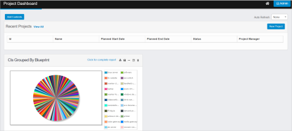

Project Dashboard
Click present in the All Modules page
Project Dashboard page is displayed
Parameter Values
ID It is the unique ID generated by the application for the configured Project
Name It is the name given for the configured Project - NEW
Planned Start Date It is the configured project initiation date - MISSING
Planned End Date It is the configured project completion date
Status It is the defined present status of the Project
Project Manager It is the name of the corresponding Project Manager

* Click Add Contents to update required Reports to be displayed in the
Dashboard page
Select required type of the report from the dropdown
Enter the search criteria in the given text box, and then click
The results are displayed as per given search criteria
Report Alignment in Dashboard page
Select required report, and then click Add to the Top to align selected report at the top of the Dashboard web page
Select required report, and then click Add to the left to align selected report to the left side of the Dashboard web page
Select required report, and then click Add to the right to align selected report to the right side of the Dashboard web page
Select required report, and then click Add to the bottom to align selected report at the bottom of the Dashboard web page